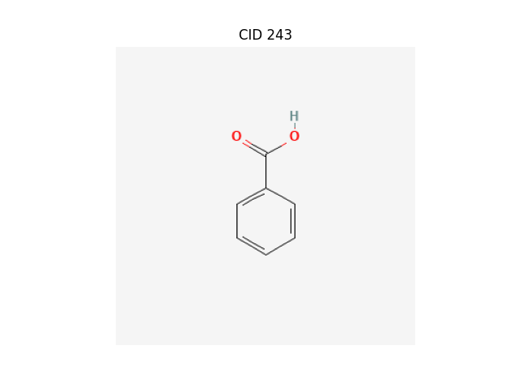

Command-Line Interface (CLI)
ChemInformant provides a suite of command-line interface (CLI) tools, designed to enable users to interact directly with the PubChem database from a terminal environment. This suite includes chemfetch for data retrieval and chemdraw for structure visualization. They are designed as standalone, powerful programs that can be easily integrated into automation scripts and data analysis workflows.
chemfetch
chemfetch is ChemInformant’s core data retrieval tool. Its primary responsibility is to accept one or more chemical identifiers provided by the user, initiate a request to the PubChem API to fetch specified chemical properties, and return the results to standard output or a file in a user-selected format. The tool can automatically recognize various identifier types and robustly handle batch requests that include invalid identifiers.
Usage
chemfetch [identifiers...] [options]
Parameters and Options
- identifiers
One or more required chemical identifiers, separated by spaces. The internal logic of chemfetch will attempt to parse the type of each identifier:
Name: e.g.,
aspirin,caffeine,water. The tool uses these names to search in PubChem.PubChem Compound ID (CID): e.g.,
2244for aspirin. This is a specific and unambiguous identifier.SMILES String: e.g.,
"CC(=O)Oc1ccccc1C(=O)O". This is a linear notation for describing a compound’s structure.
Note
When a provided SMILES string contains characters that might be interpreted by the shell as special operators (e.g., (, ), =, #), it is strongly recommended to enclose the entire string in single or double quotes to ensure it is passed as a single, complete argument to chemfetch.
- --props <property_list>
A comma-separated list of properties to precisely specify which data to retrieve for each identifier. If the user does not provide this option, chemfetch will use the default core property set (20+ essential properties including molecular_weight, formula, smiles, etc.).
Note
Property Names Use snake_case Format
ChemInformant uses standardized snake_case property names (e.g.,
molecular_weight,h_bond_donor_count). Both snake_case and CamelCase inputs are accepted, but output is always in snake_case for consistency.The complete list of available properties includes Core Properties (default set):
molecular_weight: Molecular weight, in g/mol.molecular_formula: Molecular formula.canonical_smiles,isomeric_smiles: SMILES representations.iupac_name: The systematic name established by IUPAC.xlogp: Calculated octanol-water partition coefficient.tpsa: Topological polar surface area.complexity: Molecular complexity score.h_bond_donor_count,h_bond_acceptor_count: Hydrogen bonding properties.rotatable_bond_count,heavy_atom_count: Molecular structure counts.charge: Formal molecular charge.atom_stereo_count,bond_stereo_count: Stereochemistry information.covalent_unit_count: Number of covalent units.in_ch_i,in_ch_i_key: InChI identifiers.cas: CAS Registry Number.synonyms: List of all known synonyms.
3D Properties (available with
--include-3d):volume_3d: 3D molecular volume.feature_count_3d,feature_acceptor_count_3d, etc.: 3D pharmacophore features.conformer_count_3d: Number of conformers.And more spatial descriptors…
- -f, --format <format_type>
This option controls the format of the output. Default is
table.table: Human-readable aligned table.csv: Comma-separated values.json: JSON array output.sql: Writes to a SQLite database (requires--output).
- --include-3d
Include 3D molecular descriptors in addition to the default core properties. This option is ignored when
--propsis specified. The 3D properties include volume_3d, feature_count_3d, conformer_count_3d, and other spatial descriptors.
- --all-properties
Retrieve all ~40 available properties from PubChem, including core properties, 3D descriptors, and special properties like CAS and synonyms. This option is mutually exclusive with
--propsand--include-3d.
- -o, --output <file_path>
Specifies the path for the output file. Required for
--format sqland ignored otherwise.
Basic Examples
Basic Query
chemfetch aspirin caffeine
Output:
input_identifier cid status cas molecular_weight iupac_name aspirin 2244 OK 50-78-2 180.16 2-(acetyloxy)benzoic acid caffeine 2519 OK 58-08-2 194.19 1,3,7-trimethylpurine-2,6-dione
Get All Properties
chemfetch aspirin --all-properties --format csv -o aspirin_complete.csv
This retrieves all ~40 available properties for aspirin and saves to CSV.
Include 3D Descriptors
chemfetch aspirin --include-3d
This includes 3D molecular descriptors in addition to the core property set.
Custom Property Selection
chemfetch aspirin caffeine --props "molecular_weight,xlogp,tpsa,h_bond_donor_count"
Valid and Invalid Identifiers
chemfetch caffeine "ThisIsA_FakeCompound" 999999999
Output:
input_identifier cid status molecular_weight xlogp cas caffeine 2519 OK 194.19 -0.07 58-08-2 ThisIsA_FakeCompound <NA> NotFoundError <NA> <NA> <NA> 999999999 <NA> NotFoundError <NA> <NA> <NA>
Using `chemfetch` in Data Processing Pipelines
You can pipe structured output (json, csv, or sql) into external tools.
Scenario 1: JSON + jq
chemfetch aspirin caffeine --props cas,molecular_weight --format json
chemfetch aspirin caffeine --props cas,molecular_weight --format json | jq -r '.[] | select(.status == "OK") | .cas'
Output:
50-78-2
58-08-2
Scenario 2: CSV + awk
chemfetch aspirin caffeine ethanol --props molecular_weight --format csv | awk -F, 'NR > 1 {print "Compound:", $1, "| Weight:", $4}'
Output:
Compound: aspirin | Weight: 180.16
Compound: caffeine | Weight: 194.19
Compound: ethanol | Weight: 46.07
Scenario 3: Save as SQLite
chemfetch aspirin caffeine ethanol --props cas,molecular_weight --format sql -o chemicals.db
Terminal output:
Writing data to table 'results' in database 'chemicals.db'...
Done.
Query:
sqlite3 chemicals.db "SELECT * FROM results;"
Output:
aspirin|2244|OK|50-78-2|180.16
caffeine|2519|OK|58-08-2|194.19
ethanol|702|OK|64-17-5|46.07
chemdraw
The chemdraw tool provides a quick way to invoke and display a compound’s 2D structure from the terminal.
Warning
This feature depends on optional plotting libraries (matplotlib and Pillow). You must install them via:
pip install ChemInformant[plot]
Usage
chemdraw [identifier]
Parameters
- identifier
A chemical identifier (name, CID, or SMILES) of the compound to draw.
Examples
By Name
chemdraw "Vanillin"

By SMILES
chemdraw "c1ccc(cc1)C(=O)O"

Invalid Identifier
chemdraw "MyImaginaryMolecule"
Attempting to draw structure for 'MyImaginaryMolecule'... [ChemInformant] Error: Identifier 'MyImaginaryMolecule' was not found in PubChem.
{kind=link}